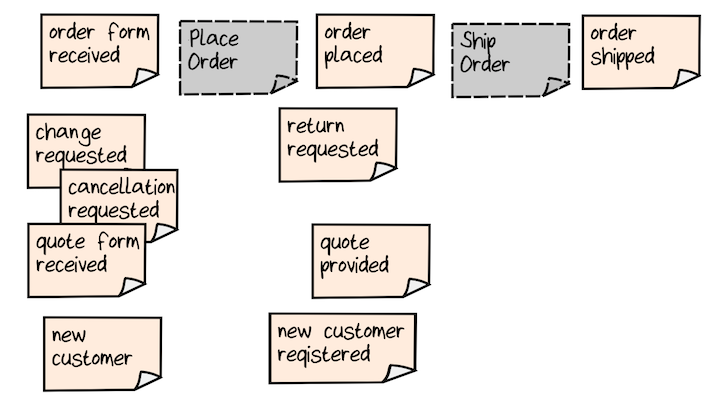
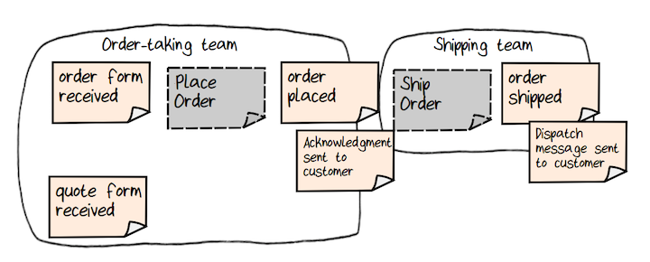
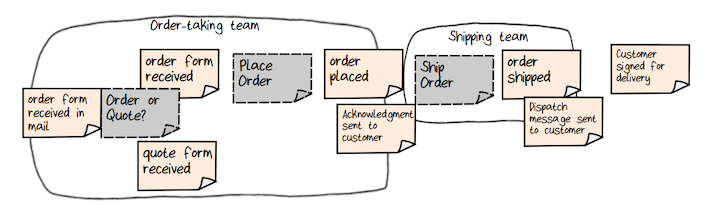
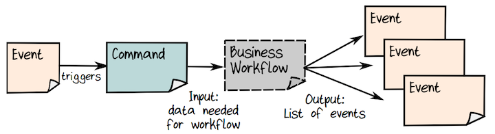
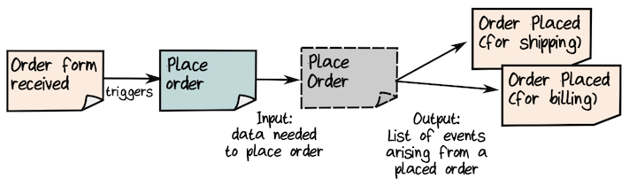
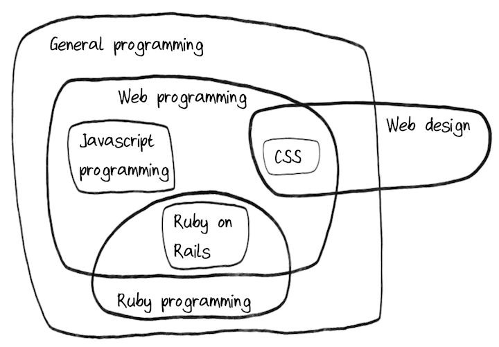
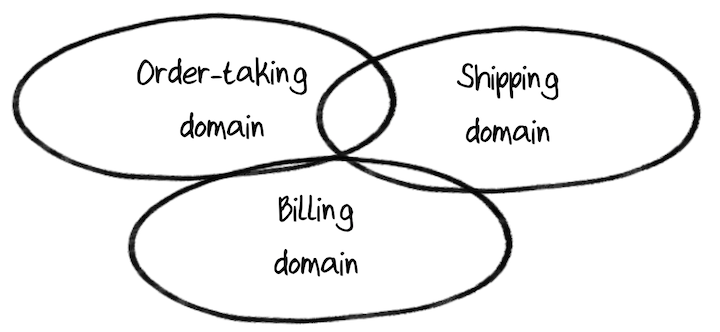
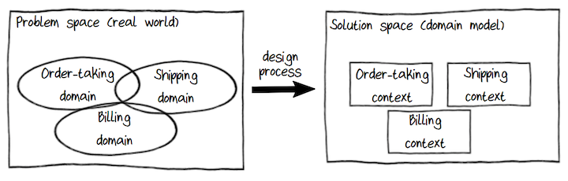
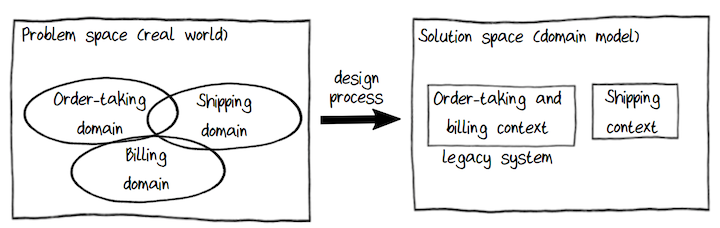
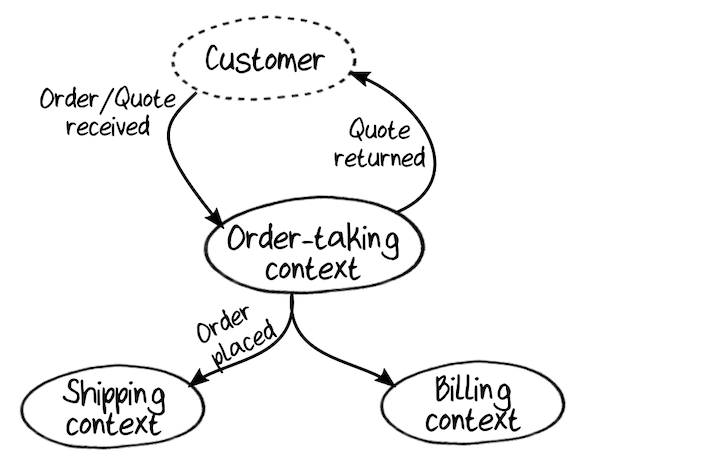

<!DOCTYPE html>
<html lang="en">
<head>
    <meta charset="utf-8">
    
    <title>一. Introducing Domain-Driven Design | Small CPP</title>
    
    
        <meta name="keywords" content="函数式,DDD 领域驱动">
    
    <meta name="viewport" content="width=device-width, initial-scale=1, maximum-scale=1">
    <meta name="description" content="DDD 社区指导我们如何创建通用的模型:  关注业务事件和工作流程, 而不是数据结构 (ps: 职责驱动) 将问题域划分为较小的子域 为每个子域创建解决方案模型 (Bounded Contexts – Domain Model) 开发一种公共语言在项目涉及的每个人之间共享, 并在代码中随处使用  Understanding the Domain Through Business Events DD">
<meta property="og:type" content="article">
<meta property="og:title" content="一. Introducing Domain-Driven Design">
<meta property="og:url" content="https://www.smallcpp.com/%E7%94%A8DDD%E5%92%8CF%EF%BC%83%E8%A7%A3%E5%86%B3%E8%BD%AF%E4%BB%B6%E5%A4%8D%E6%9D%82%E6%80%A7/%E4%B8%80.%20Introducing%20Domain%20Driven%20Design/index.html">
<meta property="og:site_name" content="Small CPP">
<meta property="og:description" content="DDD 社区指导我们如何创建通用的模型:  关注业务事件和工作流程, 而不是数据结构 (ps: 职责驱动) 将问题域划分为较小的子域 为每个子域创建解决方案模型 (Bounded Contexts – Domain Model) 开发一种公共语言在项目涉及的每个人之间共享, 并在代码中随处使用  Understanding the Domain Through Business Events DD">
<meta property="og:locale" content="en_US">
<meta property="og:image" content="https://www.smallcpp.com/%E7%94%A8DDD%E5%92%8CF%EF%BC%83%E8%A7%A3%E5%86%B3%E8%BD%AF%E4%BB%B6%E5%A4%8D%E6%9D%82%E6%80%A7/%E4%B8%80.%20Introducing%20Domain%20Driven%20Design/event-storm.png">
<meta property="og:image" content="https://www.smallcpp.com/%E7%94%A8DDD%E5%92%8CF%EF%BC%83%E8%A7%A3%E5%86%B3%E8%BD%AF%E4%BB%B6%E5%A4%8D%E6%9D%82%E6%80%A7/%E4%B8%80.%20Introducing%20Domain%20Driven%20Design/team-connection.png">
<meta property="og:image" content="https://www.smallcpp.com/%E7%94%A8DDD%E5%92%8CF%EF%BC%83%E8%A7%A3%E5%86%B3%E8%BD%AF%E4%BB%B6%E5%A4%8D%E6%9D%82%E6%80%A7/%E4%B8%80.%20Introducing%20Domain%20Driven%20Design/extend-event.png">
<meta property="og:image" content="https://www.smallcpp.com/%E7%94%A8DDD%E5%92%8CF%EF%BC%83%E8%A7%A3%E5%86%B3%E8%BD%AF%E4%BB%B6%E5%A4%8D%E6%9D%82%E6%80%A7/%E4%B8%80.%20Introducing%20Domain%20Driven%20Design/command.png">
<meta property="og:image" content="https://www.smallcpp.com/%E7%94%A8DDD%E5%92%8CF%EF%BC%83%E8%A7%A3%E5%86%B3%E8%BD%AF%E4%BB%B6%E5%A4%8D%E6%9D%82%E6%80%A7/%E4%B8%80.%20Introducing%20Domain%20Driven%20Design/commandeg.png">
<meta property="og:image" content="https://www.smallcpp.com/%E7%94%A8DDD%E5%92%8CF%EF%BC%83%E8%A7%A3%E5%86%B3%E8%BD%AF%E4%BB%B6%E5%A4%8D%E6%9D%82%E6%80%A7/%E4%B8%80.%20Introducing%20Domain%20Driven%20Design/subdomian.png">
<meta property="og:image" content="https://www.smallcpp.com/%E7%94%A8DDD%E5%92%8CF%EF%BC%83%E8%A7%A3%E5%86%B3%E8%BD%AF%E4%BB%B6%E5%A4%8D%E6%9D%82%E6%80%A7/%E4%B8%80.%20Introducing%20Domain%20Driven%20Design/subdomian2.png">
<meta property="og:image" content="https://www.smallcpp.com/%E7%94%A8DDD%E5%92%8CF%EF%BC%83%E8%A7%A3%E5%86%B3%E8%BD%AF%E4%BB%B6%E5%A4%8D%E6%9D%82%E6%80%A7/%E4%B8%80.%20Introducing%20Domain%20Driven%20Design/context.png">
<meta property="og:image" content="https://www.smallcpp.com/%E7%94%A8DDD%E5%92%8CF%EF%BC%83%E8%A7%A3%E5%86%B3%E8%BD%AF%E4%BB%B6%E5%A4%8D%E6%9D%82%E6%80%A7/%E4%B8%80.%20Introducing%20Domain%20Driven%20Design/context2.png">
<meta property="og:image" content="https://www.smallcpp.com/%E7%94%A8DDD%E5%92%8CF%EF%BC%83%E8%A7%A3%E5%86%B3%E8%BD%AF%E4%BB%B6%E5%A4%8D%E6%9D%82%E6%80%A7/%E4%B8%80.%20Introducing%20Domain%20Driven%20Design/context-map.png">
<meta property="article:published_time" content="2023-03-16T14:25:46.000Z">
<meta property="article:modified_time" content="2023-03-24T04:55:38.683Z">
<meta property="article:author" content="Han Xiao">
<meta property="article:tag" content="函数式">
<meta property="article:tag" content="DDD 领域驱动">
<meta name="twitter:card" content="summary">
<meta name="twitter:image" content="https://www.smallcpp.com/%E7%94%A8DDD%E5%92%8CF%EF%BC%83%E8%A7%A3%E5%86%B3%E8%BD%AF%E4%BB%B6%E5%A4%8D%E6%9D%82%E6%80%A7/%E4%B8%80.%20Introducing%20Domain%20Driven%20Design/event-storm.png">
    

    

    
        <link rel="icon" href="/favicon.ico">
    

    
<link rel="stylesheet" href="/libs/font-awesome/css/font-awesome.min.css">

    
<link rel="stylesheet" href="/libs/open-sans/styles.css">

    
<link rel="stylesheet" href="/libs/source-code-pro/styles.css">


    
<link rel="stylesheet" href="/css/style.css">

    
<script src="/libs/jquery/2.1.3/jquery.min.js"></script>

    
<script src="/libs/jquery/plugins/cookie/1.4.1/jquery.cookie.js"></script>

    
    
        
<link rel="stylesheet" href="/libs/lightgallery/css/lightgallery.min.css">

    
    
        
<link rel="stylesheet" href="/libs/justified-gallery/justifiedGallery.min.css">

    
    
    
    


    
        <script async src="//busuanzi.ibruce.info/busuanzi/2.3/busuanzi.pure.mini.js"></script>
    
<meta name="generator" content="Hexo 6.3.0"></head>

<body>
    <div id="container">
        <header id="header">
    <div id="header-main" class="header-inner">
        <div class="outer">
            <a href="/" id="logo">
                <i class="logo"></i>
                <span class="site-title">Small CPP</span>
                <span class="site-subtitle">(山高月小，水落石出)</span>
            </a>
            <nav id="main-nav">
                
                    <a class="main-nav-link" href="/">首页</a>
                
                    <a class="main-nav-link" href="/archives">归档</a>
                
            </nav>
            
                
                <nav id="sub-nav">
                    <div class="profile" id="profile-nav">
                        <a id="profile-anchor" href="javascript:;">
                            
                            <i class="fa fa-caret-down"></i>
                        </a>
                    </div>
                </nav>
            
            <div id="search-form-wrap">

    <form class="search-form">
        <input type="text" class="ins-search-input search-form-input" placeholder="Search">
        <button type="submit" class="search-form-submit"></button>
    </form>
    <div class="ins-search">
    <div class="ins-search-mask"></div>
    <div class="ins-search-container">
        <div class="ins-input-wrapper">
            <input type="text" class="ins-search-input" placeholder="Type something...">
            <span class="ins-close ins-selectable"><i class="fa fa-times-circle"></i></span>
        </div>
        <div class="ins-section-wrapper">
            <div class="ins-section-container"></div>
        </div>
    </div>
</div>
<script>
(function (window) {
    var INSIGHT_CONFIG = {
        TRANSLATION: {
            POSTS: 'Posts',
            PAGES: 'Pages',
            CATEGORIES: 'Categories',
            TAGS: 'Tags',
            UNTITLED: '(Untitled)',
        },
        ROOT_URL: '/',
        CONTENT_URL: '/content.json',
    };
    window.INSIGHT_CONFIG = INSIGHT_CONFIG;
})(window);
</script>

<script src="/js/insight.js"></script>


</div>
        </div>
    </div>
    <div id="main-nav-mobile" class="header-sub header-inner">
        <div class="hamburger" onclick="hamburger(this)">
            <div class="center">
                <div class="hamburger1"></div>
                <div class="hamburger2"></div>
                <div class="hamburger3"></div>
            </div>
        </div>
        <table class="menu outer">
            <tr>
                
                    <td><a class="main-nav-link" href="/">首页</a></td>
                
                    <td><a class="main-nav-link" href="/archives">归档</a></td>
                
                <td>
                    
    <div class="search-form">
        <input type="text" class="ins-search-input search-form-input" placeholder="Search">
    </div>

                </td>
            </tr>
        </table>
    </div>
</header>

<script type="text/javascript">
    function hamburger(x) {
        x.classList.toggle("change");
    }
</script>
        <div class="outer">
            
                

<aside id="profile">
    <div class="inner profile-inner">
        <div class="base-info profile-block">
            
            <h2 id="name">Han Xiao</h2>
            <h3 id="title">Designer &amp; Programmer</h3>
            <span id="location"><i class="fa fa-map-marker"></i>ShangHai, China</span>
            <a id="follow" target="_blank" href="https://github.com/uldaman/" rel="external nofollow noopener noreferrer">
                
            </a>
        </div>
        <div class="article-info profile-block">
            <div class="article-info-block">
                2
                <span>posts</span>
            </div>
            <div class="article-info-block">
                2
                <span>tags</span>
            </div>
        </div>
        
    </div>
</aside>

            
            
                <aside id="sidebar">
   
        
    <div class="widget-wrap" id="categories">
        <h3 class="widget-title">
            <span>categories</span>
            &nbsp;
            <a id="allExpand" href="#">
                <i class="fa fa-angle-double-down fa-2x"></i>
            </a>
        </h3>
        
        
        
         <ul class="unstyled" id="tree"> 
                    <li class="directory open">
                        <a href="#" data-role="directory">
                            <i class="fa fa-folder-open"></i>
                            &nbsp;
                            用DDD和F＃解决软件复杂性
                        </a>
                         <ul class="unstyled" id="tree">  <li class="file active"><a href="/%E7%94%A8DDD%E5%92%8CF%EF%BC%83%E8%A7%A3%E5%86%B3%E8%BD%AF%E4%BB%B6%E5%A4%8D%E6%9D%82%E6%80%A7/%E4%B8%80.%20Introducing%20Domain%20Driven%20Design/">一. Introducing Domain-Driven Design</a></li>  </ul> 
                    </li> 
                     <li class="file"><a href="/%E5%B8%B8%E7%94%A8%E7%BC%96%E7%A8%8B%E7%BD%91%E7%AB%99%E5%88%86%E4%BA%AB/">常用编程网站分享</a></li>  </ul> 
    </div>
    <script>
        $(document).ready(function() {
            var iconFolderOpenClass  = 'fa-folder-open';
            var iconFolderCloseClass = 'fa-folder';
            var iconAllExpandClass = 'fa-angle-double-down';
            var iconAllPackClass = 'fa-angle-double-up';
            // Handle directory-tree expansion:
            // 左键单独展开目录
            $(document).on('click', '#categories a[data-role="directory"]', function (event) {
                event.preventDefault();

                var icon = $(this).children('.fa');
                var expanded = icon.hasClass(iconFolderOpenClass);
                var subtree = $(this).siblings('ul');
                icon.removeClass(iconFolderOpenClass).removeClass(iconFolderCloseClass);
                if (expanded) {
                    if (typeof subtree != 'undefined') {
                        subtree.slideUp({ duration: 100 });
                    }
                    icon.addClass(iconFolderCloseClass);
                } else {
                    if (typeof subtree != 'undefined') {
                        subtree.slideDown({ duration: 100 });
                    }
                    icon.addClass(iconFolderOpenClass);
                }
            });
            // 右键展开下属所有目录
            $('#categories a[data-role="directory"]').bind("contextmenu", function(event){
                event.preventDefault();
                
                var icon = $(this).children('.fa');
                var expanded = icon.hasClass(iconFolderOpenClass);
                var listNode = $(this).siblings('ul');
                var subtrees = $.merge(listNode.find('li ul'), listNode);
                var icons = $.merge(listNode.find('.fa'), icon);
                icons.removeClass(iconFolderOpenClass).removeClass(iconFolderCloseClass);
                if(expanded) {
                    subtrees.slideUp({ duration: 100 });
                    icons.addClass(iconFolderCloseClass);
                } else {
                    subtrees.slideDown({ duration: 100 });
                    icons.addClass(iconFolderOpenClass);
                }
            })
            // 展开关闭所有目录按钮
            $(document).on('click', '#allExpand', function (event) {
                event.preventDefault();
                
                var icon = $(this).children('.fa');
                var expanded = icon.hasClass(iconAllExpandClass);
                icon.removeClass(iconAllExpandClass).removeClass(iconAllPackClass);
                if(expanded) {
                    $('#sidebar .fa.fa-folder').removeClass('fa-folder').addClass('fa-folder-open')
                    $('#categories li ul').slideDown({ duration: 100 });
                    icon.addClass(iconAllPackClass);
                } else {
                    $('#sidebar .fa.fa-folder-open').removeClass('fa-folder-open').addClass('fa-folder')
                    $('#categories li ul').slideUp({ duration: 100 });
                    icon.addClass(iconAllExpandClass);
                }
            });  
        });
    </script>

    
        
    <div class="widget-wrap widget-list">
        <h3 class="widget-title"><span>links</span></h3>
        <div class="widget">
            <ul>
                
                    <li>
                        <a href="https://www.smallcpp.cn/old_pages" rel="external nofollow noopener noreferrer" target="_blank">old site</a>
                    </li>
                
                    <li>
                        <a href="https://zhuec.gitbook.io/learning-notes/" rel="external nofollow noopener noreferrer" target="_blank">learning notes</a>
                    </li>
                
                    <li>
                        <a href="http://blog.smallcpp.cn">blog (deprecated)</a>
                    </li>
                
                    <li>
                        <a href="http://wiki.smallcpp.cn">wiki (deprecated)</a>
                    </li>
                
            </ul>
        </div>
    </div>


    
        
    <div class="widget-wrap">
        <h3 class="widget-title"><span>tags</span></h3>
        <div class="widget">
            <ul class="tag-list" itemprop="keywords"><li class="tag-list-item"><a class="tag-list-link" href="/tags/DDD-%E9%A2%86%E5%9F%9F%E9%A9%B1%E5%8A%A8/" rel="tag">DDD 领域驱动</a><span class="tag-list-count">1</span></li><li class="tag-list-item"><a class="tag-list-link" href="/tags/%E5%87%BD%E6%95%B0%E5%BC%8F/" rel="tag">函数式</a><span class="tag-list-count">1</span></li></ul>
        </div>
    </div>

    
    <div id="toTop" class="fa fa-angle-up"></div>
</aside>
            
            <section id="main"><article id="post-用DDD和F＃解决软件复杂性/一. Introducing Domain Driven Design" class="article article-type-post" itemscope itemprop="blogPost">
    <div class="article-inner">
        
        
            <header class="article-header">
                
                    <div class="article-meta">
                        
    <div class="article-category">
    	<i class="fa fa-folder"></i>
        <a class="article-category-link" href="/categories/%E7%94%A8DDD%E5%92%8CF%EF%BC%83%E8%A7%A3%E5%86%B3%E8%BD%AF%E4%BB%B6%E5%A4%8D%E6%9D%82%E6%80%A7/">用DDD和F＃解决软件复杂性</a>
    </div>

                        
    <div class="article-tag">
        <i class="fa fa-tag"></i>
        <a class="tag-link-link" href="/tags/DDD-%E9%A2%86%E5%9F%9F%E9%A9%B1%E5%8A%A8/" rel="tag">DDD 领域驱动</a>, <a class="tag-link-link" href="/tags/%E5%87%BD%E6%95%B0%E5%BC%8F/" rel="tag">函数式</a>
    </div>

                        
    <div class="article-date">
        <i class="fa fa-calendar"></i>
        <a href="/%E7%94%A8DDD%E5%92%8CF%EF%BC%83%E8%A7%A3%E5%86%B3%E8%BD%AF%E4%BB%B6%E5%A4%8D%E6%9D%82%E6%80%A7/%E4%B8%80.%20Introducing%20Domain%20Driven%20Design/">
            <time datetime="2023-03-16T14:25:46.000Z" itemprop="datePublished">2023-03-16</time>
        </a>
    </div>


                        
                            <i class="fa fa-bar-chart"></i>
                            <span id="busuanzi_container_site_pv"><span id="busuanzi_value_page_pv"></span></span>    
                        
                        
                    </div>
                
                
    
        <h1 class="article-title" itemprop="name">
            一. Introducing Domain-Driven Design
        </h1>
    

            </header>
        
        
        <div class="article-entry" itemprop="articleBody">
        
        
            
                <div id="toc" class="toc-article">
                <strong class="toc-title">Catalogue</strong>
                    <ol class="toc"><li class="toc-item toc-level-1"><a class="toc-link"><span class="toc-number">1.</span> <span class="toc-text">Understanding the Domain Through Business Events</span></a><ol class="toc-child"><li class="toc-item toc-level-2"><a class="toc-link" href="#Using-Event-Storming-to-Discover-the-Domain"><span class="toc-number">1.1.</span> <span class="toc-text">Using Event Storming to Discover the Domain</span></a></li><li class="toc-item toc-level-2"><a class="toc-link" href="#Discovering-the-Domain-An-Order-Taking-System"><span class="toc-number">1.2.</span> <span class="toc-text">Discovering the Domain: An Order-Taking System</span></a></li><li class="toc-item toc-level-2"><a class="toc-link" href="#Expanding-the-Events-to-the-Edges"><span class="toc-number">1.3.</span> <span class="toc-text">Expanding the Events to the Edges</span></a></li><li class="toc-item toc-level-2"><a class="toc-link" href="#Documenting-Commands"><span class="toc-number">1.4.</span> <span class="toc-text">Documenting Commands</span></a></li></ol></li><li class="toc-item toc-level-1"><a class="toc-link"><span class="toc-number">2.</span> <span class="toc-text">Partitioning the Domain into Subdomains</span></a></li><li class="toc-item toc-level-1"><a class="toc-link"><span class="toc-number">3.</span> <span class="toc-text">Creating a Solution Using Bounded Contexts</span></a><ol class="toc-child"><li class="toc-item toc-level-2"><a class="toc-link" href="#Getting-the-Contexts-Right"><span class="toc-number">3.1.</span> <span class="toc-text">Getting the Contexts Right</span></a></li><li class="toc-item toc-level-2"><a class="toc-link" href="#Creating-Context-Maps"><span class="toc-number">3.2.</span> <span class="toc-text">Creating Context Maps</span></a></li><li class="toc-item toc-level-2"><a class="toc-link" href="#Focusing-on-the-Most-Important-Bounded-Contexts"><span class="toc-number">3.3.</span> <span class="toc-text">Focusing on the Most Important Bounded Contexts</span></a></li></ol></li><li class="toc-item toc-level-1"><a class="toc-link"><span class="toc-number">4.</span> <span class="toc-text">Creating a Ubiquitous Language</span></a></li><li class="toc-item toc-level-1"><a class="toc-link"><span class="toc-number">5.</span> <span class="toc-text">Summarizing the Concepts of Domain-Driven Design</span></a></li><li class="toc-item toc-level-1"><a class="toc-link"><span class="toc-number">6.</span> <span class="toc-text">附: 事件风暴</span></a></li></ol>
                </div>
            
        
        
            <p>DDD 社区指导我们如何创建通用的模型:</p>
<ul>
<li>关注业务事件和工作流程, 而不是数据结构 (ps: 职责驱动)</li>
<li>将问题域划分为较小的子域</li>
<li>为每个子域创建解决方案模型 (Bounded Contexts – Domain Model)</li>
<li>开发一种公共语言在项目涉及的每个人之间共享, 并在代码中随处使用</li>
</ul>
<h1>Understanding the Domain Through Business Events</h1>
<p>DDD 收集需求的方法强调在开发人员和领域专家之间建立共识, 但是我们该从哪开始?</p>
<p>第一条准则是 “<strong>专注于业务事件</strong>”, 因此让我们开始事件风暴会议. 这是开始的方式.</p>
<p>业务不光有数据, 而且还以某种方式对其进行了转换. 也就是说, 可以把业务流程看作一系列数据或文档的转换; 而在转换的过程中创造出了业务价值, 因此了解这些转换如何工作以及它们如何相互关联是非常重要的.</p>
<p>闲置在那里的数据不会产生任何贡献, 是什么让员工 (或自动化流程) 开始使用该数据并产生价值?<br>
通常是外部触发 (一封邮件到达, 接了个电话), 但也可能是基于时间的触发 (每天上午 10 点做某事) 或基于观察者 (收件箱中没有其他订单可以处理, 请执行其他操作).<br>
无论是什么, 将其作为设计的一部分捕获都是很重要的, 我们称这些为<strong>领域事件</strong>.</p>
<p>领域事件几乎是我们所有想要建模的业务流程的起点. 例如, &quot;收到新订单&quot;是一个启动接单流程的领域事件. (ps: 即一个业务流程基本上都是由领域事件启动).</p>
<p>领域事件始终以过去时态书写, 因为那些是已经发生的, 无法更改的事实.</p>
<h2 id="Using-Event-Storming-to-Discover-the-Domain">Using Event Storming to Discover the Domain</h2>
<p>事件风暴是我们收集业务事件的有效方式之一.</p>
<p>在事件风暴中, 可以召集各种各样的人（他们了解域的不同部分）来参加研讨会. 与会人员不仅应包括开发人员和领域专家, 还应包括对项目成功感兴趣的所有其他利益相关方. 正如事件风暴者喜欢说的: “任何有疑问的人, 任何有答案的人.”</p>
<p>研讨会应在一个有大墙壁的房间内举行, 墙壁上应覆盖纸或白板材料, 以便参与者可以在其上张贴或绘制便签. 在会议成功结束时, 墙壁上将覆盖数百个这样的笔记.</p>
<p>在研讨会期间, 人们在便签上写下业务事件, 然后将其张贴在墙上. 其他人可能会通过发布注释来回应, 这些注释概述了由这些事件触发的业务工作流程. 这些工作流程反过来通常会导致创建其他业务事件. 此外, 注释通常还很可能触发小组之间的进一步讨论. 这样做的目的是让所有参与者都能发布他们所知道的内容, 并提出他们所不知道的问题. 这是一个高度互动的过程, 鼓励每个人都参与其中.</p>
<h2 id="Discovering-the-Domain-An-Order-Taking-System">Discovering the Domain: An Order-Taking System</h2>
<p>案例分析. 一家公司的需求:</p>
<p>“我们是一家小公司, 为其他公司制造零件: 小部件, 小物件等. 我们发展非常快, 我们的现有流程无法跟上. 目前, 我们所做的一切都是基于纸张的, 我们希望将所有这些都让计算机进行处理, 以便我们的员工可以处理大量的订单. 特别是, 我们希望拥有一个自助服务网站, 以便客户自己完成一些任务. 下订单, 检查订单状态等.”</p>
<p>进行一轮<a href="http://www.smallcpp.cn/yi-introducing-domain-driven-design.html#_1" rel="external nofollow noopener noreferrer" target="_blank">事件风暴</a>后, 我们的墙上也许看起来是这样的:</p>
<p></p>
<blockquote>
<p>一些事件旁边还张贴了业务工作流程, 例如 “place order” 和 “ship order”</p>
</blockquote>
<p>让我们看一下事件风暴可以促进需求收集的哪些方面:</p>
<ul>
<li><strong>通用的业务模型</strong>. 每个人都在同一堵墙上看到相同的东西</li>
<li><strong>更好的团队协作</strong>. 所有的团队都参与到讨论, 有可能你的输出会是另一个团队的输入, 所以你可能需要了解的更多</li>
<li><strong>发现缺省的需求</strong>. 在项目开始时需求通常很模糊, 随着讨论的深入, 一些需求会慢慢浮出表面</li>
</ul>
<p>如下图, 随着讨论的进行, 我们发现了新的需求(<em>发现缺省的需求</em>): “Acknowledgment sent to customer” 和 “dispatch message sent to customer”, 另外还发现了当接订单部门完成订单处理后, 需要通过 “order placed” 事件通知计费部门(<em>更好的团队协作</em>).</p>
<p></p>
<p>另外需要注意, 任何企业都需要了解过去发生的事情––<strong>报告始终是领域的一部分</strong>! 确保事件风暴研讨会中包括了报告和其他只读模型(例如 UI 的视图模型).</p>
<h2 id="Expanding-the-Events-to-the-Edges">Expanding the Events to the Edges</h2>
<p>尽可能多地跟踪事件链到系统边界通常很有用. 我们会问最外边的事件之前是否发生了任何事件.</p>
<pre><code>&quot;是什么触发了 Order form received 事件?&quot;
&quot;我们每天早上打开邮件, 客户会发送订单表格过来, 我们将其分类为订单或报价.&quot;
&quot;所以我们也需要 Mail Received 事件吗?&quot;
</code></pre>
<p>同样, 我们甚至可以将事件扩展到业务的运输方面.</p>
<pre><code>&quot;将订单运送给客户后, 是否有可能发生的事件?&quot;
&quot;如果订单是[已签收交货], 我们将收到快递服务的通知, 那么我添加一个 Shipment received by customer 事件&quot;
</code></pre>
<p>扩展业务事件扩展是捕获缺失需求的好方法之一, 你可能会发现事件链最终比预期的要长.</p>
<p></p>
<blockquote>
<p>现在我们关注仅是业务领域层面, 并不涉及到具体的开发设计; 此外, 在开始实现时, 通常不需要一次转换所有系统, 应该从整个系统来看, 首先只转换最受益的部分.</p>
</blockquote>
<h2 id="Documenting-Commands">Documenting Commands</h2>
<p>收集到许多事件后, 我们也许会思考: “是什么原因导致这些领域事件的发生?”. 可能是某人或某物想要进行某项活动, 例如, 客户希望我们收到订单, 或者老板要求我们做某事. DDD 术语中将这些请求称为命令(不要与 OO 编程中使用的命令模式相混淆).</p>
<blockquote>
<p>命令通常用命令句书写, 很可能会在将来被变函数名.</p>
</blockquote>
<p>并非所有命令都能成功执行, 例如订单可能已丢失, 或者我们正忙于处理更重要的事情. 但是, 如果命令成功执行, 它将启动工作流程, 该工作流程又将创建相应的领域事件. 实际上, 我们将尝试以这种方式对大多数业务流程进行建模. 事件触发命令, 从而启动一些业务工作流程, 工作流程会输出更多的事件, 然后, 这些事件也可以触发其它命令. 这种思考业务流程的方式––具有输入和输入的管道, 非常适合<strong>函数式编程</strong>的方式.</p>
<p></p>
<p>然后, 使用此方法, <em>order taking</em> 过程如下所示:</p>
<p></p>
<blockquote>
<p>并非所有事件都需要与命令关联, 一些事件可能是由调度程序或监视系统或人为触发.</p>
</blockquote>
<p>至于 <em>Place Order</em> 产生的事件如何触发下一步命令, 参考: <a href="http://www.smallcpp.cn/er-a-functional-architecture.html#communicating-between-bounded-contexts" rel="external nofollow noopener noreferrer" target="_blank">Communicating Between Bounded Contexts</a>.</p>
<h1>Partitioning the Domain into Subdomains</h1>
<p>现在, 我们有了事件和命令的列表, 并且对各种业务流有了很好的了解. 可以开始进行下一步了.</p>
<p>第二条准则是 “<strong>将问题域划分为较小的子域</strong>”. 往往一个大领域可能会被拆分为职责更明确的小领域, 我们称这些为<strong>子域</strong>. 所以子域是一个相对的概念, 它本身是一个领域, 同时它又是另一个大领域的子域. 例如, “Web 编程” 是 “通用编程” 领域的子域. “JavaScript 编程” 是 “Web 编程” 领域的子域(至少以前是).</p>
<p>众所周知, 企业内部按职责设有独立的部门, 这很明显地暗示着我们可以在设计中遵循相同的划分. 我们将划分后的各部分称为领域. 那么怎么定义各个领域? 实际上<strong>无须费心去定义各个领域的具体含义</strong>, 例如 “计费” 领域, 在实践中, 我们只用说 “计费” 是计费部门人员(领域专家)的工作, 而无需努力地为 “计费” 的含义提供明确的词典解释.</p>
<blockquote>
<p><a href="http://www.smallcpp.cn/yi-introducing-domain-driven-design.html#getting-the-contexts-right" rel="external nofollow noopener noreferrer" target="_blank">Getting the Contexts Right</a> 介绍了其它的一些帮助准则.</p>
</blockquote>
<p>有的时候领域还会发生重叠. 例如, “CSS” 子域可以被视为 “网络编程” 领域的一部分, 但也可以被视为 “网络设计” 领域的一部分. 因此, 在将领域划分为更小的部分时, 我们必须小心: 我们想要绝对清晰的边界, 但现实世界比这要模糊得多(所以我们需要接下来要说的 <em>Bounded Contexts</em>).</p>
<p></p>
<p>将这种领域划分方法应用于订单处理系统(公司存在 “订单部门”, “运输部门”, “开票部门”):</p>
<p></p>
<p>领域之间有些重叠, 接单员必须对开票和运输部门的工作情况有一点了解, 运输员必须对接单和开票部门的工作情况有一点了解, 等等.</p>
<p>当然, 作为开发人员, 我们实际上需要更深入地了解上述领域. 但是, 现在让我们推迟了解, 继续去学习解决方案的指导原则.</p>
<h1>Creating a Solution Using Bounded Contexts</h1>
<p>清楚了问题并不意味着构建解决方案很容易. 解决方案不可能描绘出原始领域中的所有信息, 我们也不希望如此. 我们应该只捕获与解决特定问题有关的信息, 而其它的都不相关.</p>
<p>因此, 我们需要构建两套不同的体系对 “<strong>问题空间</strong>” 和 “<strong>解决方案空间</strong>” 进行区分. 我们将创建问题空间的模型, 仅提取领域中相关的方面, 最后在解决方案空间中重新构建它们(-&gt;领域模型).</p>
<p></p>
<blockquote>
<p><em>领域模型</em>是解决方案空间的一部分, 而它代表的<em>领域</em>是问题空间的一部分.</p>
</blockquote>
<p>如上图, 在<strong>解决方案空间</strong>中, 可以看到<strong>问题空间</strong>中的领域/子域已被映射成了<strong>界限上下文</strong>.</p>
<p><strong>为什么要使用 “上下文”?</strong><br><br>
因为每个上下文都代表解决方案中的一些专业知识. 在上下文中, 我们共享一种通用语言, 并且设计是连贯一致的. 就像在现实世界中一样, 脱离上下文的信息可能会令人困惑或无法使用.</p>
<p><strong>为什么要使用 “界限”?</strong><br><br>
在现实世界中, 领域的边界比较模糊, 领域间有所重叠; 但是在软件世界中, 我们希望减少子系统之间的耦合, 以便它们可以独立开发. 我们可以使用标准软件实践来做到这一点, 例如在子系统之间使用显式 API 并避免诸如共享代码之类的显示依赖. 不幸的是, 这也意味着我们的领域模型永远不会像现实世界那样丰富, 但是我们可以容忍这一点以换取更低的复杂性和更轻松的维护.</p>
<p>其实, <strong>界限上下文本身就是一个  子域</strong>, 区别在于, 子域是问题空间的概念, 描述现实世界的业务如何被分解; 而界限上下文是解决方案空间的概念, 描述软件和软件开发是如何被分解的. 使用界限上下文这个词主要是有助于我们在设计解决方案时始终专注于重要的事情: 了解<strong>上下文</strong>并了解<strong>边界</strong>.</p>
<p>在大多数情况下, 子域和界限上下文是一一对应的, 但是在有遗留系统时, 有可能会有例外. 例如, 问题空间中的部分子域可能在遗留系统中已有实现, 我们待开发的新系统只要直接调用即可, 此时这部分子域会被映射成一个界限上下文.</p>
<p></p>
<p>不管我们怎样划分领域, 重要的是每个界限上下文都应有明确的<strong>职责</strong>. 因为当我们实现模型时, 界限上下文会被实现成子系统, 并将完全对应于<a href="http://www.smallcpp.cn/er-a-functional-architecture.html#bounded-contexts-as-autonomous-software-components" rel="external nofollow noopener noreferrer" target="_blank">某种软件组件</a>, 例如单独的 <em>DLL</em>, 独立服务或简单的命名空间, 取决于我们的软件架构.</p>
<h2 id="Getting-the-Contexts-Right">Getting the Contexts Right</h2>
<p>DDD 的最重要挑战之一是正确设置这些界限上下文. 以下是一些帮助准则:</p>
<ul>
<li><strong>观察领域专家</strong>. 如果他们使用相同的语言并专注于相同的问题, 则他们可能在属于同一个领域(映射到界限上下文).</li>
<li><strong>注意现有团队/部门的界限</strong>. 这些是企业认为的领域/子域(映射到界限上下文)的有力线索. 当然, 这并不总是正确的, 有时同一部门中的人们彼此之间工作不一致; 相反, 可能会有不同部门中的人员紧密合作, 这反过来意味着他们可能在同一领域工作.</li>
<li><strong>不要忘记 “界限”</strong>. 我们需要明确界限上下文中的 “界限”, 特别是在需求不断变化时. 太大或太模糊的边界相当于根本就没有边界. (当然, 我们也有专门处理需求变化的方案, 在后续会详细介绍)</li>
<li><strong>自主设计</strong>. 如果两个小组对相同的界限上下文做出贡献, 那么它们可能会朝着不同的方向发展. 这会造成设计越来越混乱. 所以, 相比于试图让每个人都感到高兴的大型上下文, 可独立发展的并且有界限的上下文总是更好.</li>
<li><strong>为更流畅的业务工作流服务</strong>. 如果工作流与多个界限上下文进行交互并且经常被它们阻塞或延迟, 请考虑重构界限上下文以使工作流更加流畅, 即使设计变得 “难看”. 也就是说, 始终专注于业务和客户价值, 而不是任何一种 “纯” 设计.</li>
</ul>
<h2 id="Creating-Context-Maps">Creating Context Maps</h2>
<p>一旦定义了这些上下文, 我们就需要一种方法来表达它们之间的相互作用, 目标不是捕获每个细节, 而是在全局层面提供整个系统的视图. 在 DDD 术语中, 这些图称为上下文映射图.</p>
<p></p>
<p>在该映射图时, 我们并不关心 “shipping context” 的内部结构, 而只是知道从 “order-taking context” 接收数据, 至于怎么接收的暂时也不关心. 我们非正式地说, “shipping context” 在下游, 而 “order-taking context” 在上游.</p>
<p>显然, 这两个上下文需要将它们要交换的消息格式达成一致. 通常, 上游对格式的决定权影响更大. 但有时, 下游不够灵活 (例如下游是一个遗留系统), 此时上游必须进行适应, 通常是引入某种<a href="http://www.smallcpp.cn/er-a-functional-architecture.html#contracts-between-bounded-contexts" rel="external nofollow noopener noreferrer" target="_blank">适配器组件</a>作为中介.</p>
<p>最后, 值得指出的是, 在我们的设计中, 我们可以将所有内容放入一张映射图中(到目前为止). 但在更复杂的设计中, 我们自然会希望创建一系列较小的映射图, 每个映射图都针对特定的子系统.</p>
<h2 id="Focusing-on-the-Most-Important-Bounded-Contexts">Focusing on the Most Important Bounded Contexts</h2>
<p>是否已有的界限上下文都同样重要? 开始开发时应该关注哪些?</p>
<p>通常, 某些域比其他域更重要, 这些是<strong>核心域</strong>, 提供业务优势的领域, 带来收益的领域.</p>
<p>其他领域也可能是必需的, 但不是核心, 这些称为<strong>支撑域</strong>; 还有些领域不是企业专有的(例如外部购买的通用服务), 则称为<strong>通用域</strong>.</p>
<p>例如, 对于一家贸易公司而言, 接单和发货域可能是核心域, 因为它们的业务优势是其出色的客户服务; 帐单领域将被视为支撑域; 而货运的交付将被视为通用域, 这意味着他们可以安全地将其外包.</p>
<p>当然, 现实并不如此简单. 有时同样类型的贸易公司可能会发现其货运的交付对于客户满意度至关重要, 此时货运的交付将被视为核心域. 就像同样是电商, 有的注重销售, 而有的注重售后, 有的注重活动, 还有的注重品质. 所以我们要深入了解目标问题域, 挖掘出真正的核心域.</p>
<p>专注于那些能够带来最大价值的界限上下文, 然后从那里开始扩展.</p>
<blockquote>
<p>PS, 区分支撑域以及通用域可能并不那么重要, 但是识别出核心域还是蛮重要的, 因为核心域会让我们花更多的财力, 人力在上面.</p>
</blockquote>
<h1>Creating a Ubiquitous Language</h1>
<p>我们之前说过, 开发和领域专家必须共享同一模型.</p>
<p>这意味着我们设计中的事物必须代表领域专家的心理模型中的真实事物. 也就是说, 如果领域专家称某事为 <em>Order</em>, 那么我们应该在与之相对应的代码中有一个名为 <em>Order</em> 的东西, 并且行为方式相同. (在&lt;职业驱动开发中提到过的<strong>低表示差异</strong>&gt;).</p>
<p>相应的, 我们在设计中也不应包含不代表领域专家模型的内容. 这意味着没有诸如 <em>OrderFactory</em>, <em>OrderManager</em>, <em>OrderHelper</em> 等之类的术语, 领域专家不会知道这些单词的含义. 当然, 这些术语可能在代码库中出现, 但应避免将它们作为设计的一部分公开.</p>
<p>我们将这些在团队中每个人之间共享的概念和词汇表称为<strong>通用语言</strong>. 顾名思义, 这种语言应该在项目中的所有地方使用, 不仅用于需求, 还用于设计, 最重要的是, 源代码.</p>
<p>通用语言的构建是团队成员互相协作的结果. 我们也不应该期望这种通用语言是静态的–它始终是一项正在进行的工作. 随着设计的发展, 会发现新术语和新概念, 它们会让通用语言相应地发展.</p>
<blockquote>
<p>该阶段应该会产出词汇表, 或者 Wiki 之类的东西.</p>
</blockquote>
<p>最后, 重要的是要认识到, 通常无法拥有覆盖所有领域和上下文的通用语言. 每个上下文都将有一些通用语言的 “方言”, 在不同的方言中, 一些单词拥有相同的含义, 但有些相同的单词可能意味着不同的含义. 例如, “类” 在 “面向对象的程序设计” 领域中意味的东西和在 “CSS” 领域中完全不同.</p>
<p>在贸易系统的事件风暴中, 所有与会者在描述事件时都使用了 <em>Order</em> 一词. 但如果我们在所有地方都使用相同的 <em>Order</em> 一词而不指定其上下文, 那么很可能会遇到一些痛苦的误解, 这种误解最终会导致开发的失败 – 我们可能会为 “运输子系统” 和 “开票子系统” 中的 <em>Order Class</em> 设计同样的属性. 但实际上, 运输部门与开票部门对 <em>Order</em> 的定义有些微不同, 运输部门可能关心库存水平, 物品数量等, 而开票部门可能更关心价格和金钱.</p>
<h1>Summarizing the Concepts of Domain-Driven Design</h1>
<p>We’ve been introduced to a lot of new concepts and terminology, so let’s quickly summarize them in one place before moving on.</p>
<ol>
<li>A Domain is an area of knowledge associated with the problem we are trying to solve. Alternatively a “domain” is that which a “domain expert” is expert in.</li>
<li>A Domain Model is a set of simplifications that represent those aspects of a domain that are relevant to a particular problem. The domain model is part of the solution space, while the domain that it represents is part of the problem space.</li>
<li>The Ubiquitous Language is a set of concepts and vocabulary associated with the domain, shared by both the team members and the source code.</li>
<li>A Bounded Context is a subsystem in the solution space with clear boundaries that distinguish it from other subsystems. A bounded context often corresponds to a subdomain in the problem space. A bounded con- text also has its own set of concepts and vocabulary, its own dialect of the Ubiquitous Language.</li>
<li>A Context map is a high-level diagram showing a collection of bounded contexts and the relationships between them.</li>
<li>A Domain Event is a record of something that happened in the system. It is always described in the past tense. An event often triggers additional activity.</li>
<li>A Command is a request for some process to happen, triggered by a person or another event. If the process succeeds, the state of the system changes and one or more Domain Events are recorded.</li>
</ol>
<h1>附: 事件风暴</h1>
<ul>
<li>You: “Someone start by posting a business event!”</li>
<li>Ollie: “I’m Ollie from the order-taking department. Mostly we deal with orders and quotes coming in.”</li>
<li>You: “What triggers this kind of work?”</li>
<li>Ollie: “When we get forms sent to us by the customer in the mail.”</li>
<li>You: “So the events would be something like ‘Order form received’ and ‘Quote form received’?”</li>
<li>Ollie: “Yes. Let me put those up on the wall then.”</li>
<li>Sam: “I’m Sam from the shipping department. We fulfill those orders when they’re signed off.”</li>
<li>You: “And how do you know when to do that?”</li>
<li>Sam: “When we get an order from the order-taking department.”</li>
<li>You: “What would you call that as an event?”</li>
<li>Sam: “How about ‘Order Available’?”</li>
<li>Ollie: “We call an order that’s completed and ready to ship a ‘Placed Order.’ Can we agree on using that term everywhere?”</li>
<li>Sam: “So ‘Order Placed’ would be the event we care about, yes?”</li>
</ul>
<p>You get the idea. After a while, we might have list of posted events like this:</p>
<ul>
<li>‘Order form received’</li>
<li>‘Order placed’</li>
<li>‘Order shipped’</li>
<li>‘Order change requested’</li>
<li>‘Order cancellation requested’</li>
<li>‘Return requested’</li>
<li>‘Quote form received’</li>
<li>‘Quote provided’</li>
<li>‘New customer request received’</li>
<li>‘New customer registered’</li>
</ul>

            </div>
        
        <footer class="article-footer">
        </footer>
    </div>
</article>


    
<nav id="article-nav">
    
        <a href="/%E5%B8%B8%E7%94%A8%E7%BC%96%E7%A8%8B%E7%BD%91%E7%AB%99%E5%88%86%E4%BA%AB/" id="article-nav-newer" class="article-nav-link-wrap">
            <strong class="article-nav-caption">Newer</strong>
            <div class="article-nav-title">
                
                    常用编程网站分享
                
            </div>
        </a>
    
    
</nav>


    
    


<!-- baidu url auto push script -->
<script type="text/javascript">
    !function(){var e=/([http|https]:\/\/[a-zA-Z0-9\_\.]+\.baidu\.com)/gi,r=window.location.href,o=document.referrer;if(!e.test(r)){var n="//api.share.baidu.com/s.gif";o?(n+="?r="+encodeURIComponent(document.referrer),r&&(n+="&l="+r)):r&&(n+="?l="+r);var t=new Image;t.src=n}}(window);
</script>     
</section>
        </div>
        <footer id="footer">
    <div class="outer">
        <div id="footer-info" class="inner">
            Han Xiao &copy; 2023 
            <a rel="external nofollow noopener noreferrer" href="http://creativecommons.org/licenses/by-nc-nd/4.0/" target="_blank"></a>
            <br> Powered by <a href="http://hexo.io/" target="_blank" rel="external nofollow noopener noreferrer">Hexo</a>. Theme - <a href="https://github.com/zthxxx/hexo-theme-Wikitten" rel="external nofollow noopener noreferrer" target="_blank">wikitten</a>
            
                <br>
                <span id="busuanzi_container_site_pv"><i class="fa fa-eye"></i> <span id="busuanzi_value_site_pv"></span></span>
                &nbsp;|&nbsp;
                <span id="busuanzi_container_site_pv"><i class="fa fa-user"></i> <span id="busuanzi_value_site_uv"></span></span>
            
        </div>
    </div>
</footer>

        

    
        
<script src="/libs/lightgallery/js/lightgallery.min.js"></script>

        
<script src="/libs/lightgallery/js/lg-thumbnail.min.js"></script>

        
<script src="/libs/lightgallery/js/lg-pager.min.js"></script>

        
<script src="/libs/lightgallery/js/lg-autoplay.min.js"></script>

        
<script src="/libs/lightgallery/js/lg-fullscreen.min.js"></script>

        
<script src="/libs/lightgallery/js/lg-zoom.min.js"></script>

        
<script src="/libs/lightgallery/js/lg-hash.min.js"></script>

        
<script src="/libs/lightgallery/js/lg-share.min.js"></script>

        
<script src="/libs/lightgallery/js/lg-video.min.js"></script>

    
    
        
<script src="/libs/justified-gallery/jquery.justifiedGallery.min.js"></script>

    
    
        <script type="text/x-mathjax-config">
    MathJax.Hub.Config({
        tex2jax: {
            inlineMath: [ ["$","$"], ["\\(","\\)"] ],
            skipTags: ['script', 'noscript', 'style', 'textarea', 'pre', 'code'],
            processEscapes: true,
            TeX: {
                equationNumbers: {
                  autoNumber: 'AMS'
                }
            }
        }
    });
    MathJax.Hub.Queue(function() {
        var all = MathJax.Hub.getAllJax();
        for (var i = 0; i < all.length; ++i)
            all[i].SourceElement().parentNode.className += ' has-jax';
    });
</script>
<script async src="//cdnjs.cloudflare.com/ajax/libs/mathjax/2.7.1/MathJax.js?config=TeX-AMS-MML_HTMLorMML"></script>
    


<!-- Custom Scripts -->

<script src="/js/main.js"></script>


    </div>
</body>
</html>